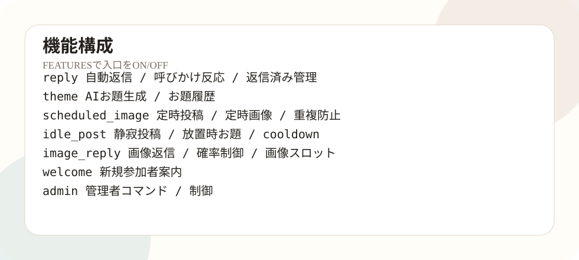

基本構造
現在の標準構造は、共通テンプレと3体専用Plugin repoを分ける形です。共通テンプレはコピー元、本番運用は専用repoという役割分担にしています。

処理の流れ
mixi2からイベントや投稿を受け取り、handlerで判定し、必要に応じてOpenAIで返信文やお題を生成し、mixi2 APIで投稿・返信します。定時投稿や静寂投稿はschedulerが担当します。

mixi2 Event投稿・参加
handler判定
OpenAI生成
mixi2 API返信
scheduler定時処理
人格と素材
人格は personas、素材は assets に置きます。専用repoでは、原則として1人格と1素材セットだけを残します。
PERSONA="kyomu_neko"
PERSONA_PATH="personas/kyomu_neko/persona.json"
IMAGE_REF_DIR="assets/kyomu_neko/refs"この3つがずれると、人格は虚無猫なのに画像素材は別キャラ、または素材ディレクトリが見つからない、という事故につながります。専用repo化は、この取り違えを防ぐための整理です。
Plugin repo内の主な場所
| 場所 | 役割 | 注意 |
|---|---|---|
cmd/plugin | Railway本番で起動する入口。 | 変更後は go build ./cmd/plugin。 |
cmd/configui | ローカルブラウザ設定UI。 | 本番Railwayを直接操作しない。 |
cmd/*check | 接続・投稿・設定確認。 | 段階ごとに使う。 |
internal/handler | 投稿、返信、歓迎、管理者コマンド。 | 誤返信の中心確認箇所。 |
internal/scheduler | 定時投稿、画像投稿、静寂投稿。 | 履歴とVolumeが重要。 |
internal/config | Variables読み込み。 | Secret空欄やデフォルト値に注意。 |
personas | 人格設定。 | 専用repoでは1人格。 |
assets | 画像素材。 | 専用repoでは1人格分。 |